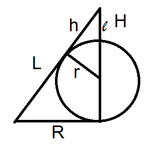

Разбор задач по вычислительной геометрии
Длина вектора
Вычислить длину вектора $\overrightarrow{a}=(x,y,z)$
Ответ: $\overrightarrow{a}=\sqrt{x^2+y^2+z^2}$
Прямая по 2-м точкам
$ax_1+by_1+c=0$
$ax_2+by_2+c=0$
Окружность
Дано: $R$ - радиус окружности
Диаметр: $2R$
Длина окружности: $2{\pi}R$
Площадь окружности: ${\pi}R^2$
Колпак
Определите максимальный размер шара, который можно спрятать под "колпаком" - круглым прямым конусом (основание является кругом, ось конуса перпендикулярна основанию).
Дано:
- длина образующей конуса $L$
- диаметр основания $D$

Радиус основания конуса: $R=\frac{D}{2}$
Высота конуса: $H = \sqrt{L^2-R^2}$
Маленький треугольник и большой подобны: $\frac{l}{L} = \frac{r}{R}$, отсюда $l = \frac{rL}{R}$
С другой стороны: $H = l + r = \frac{rL}{R} + r = \frac{rL}{R} + \frac{rR}{R} = \frac{r(L+R)}{R}$
Тогда радиус шара: $r = \frac{ RH } {L+R} = \frac{ DH } {2L+D} = \frac{ D\sqrt{L^2-R^2} } {2L+D}$